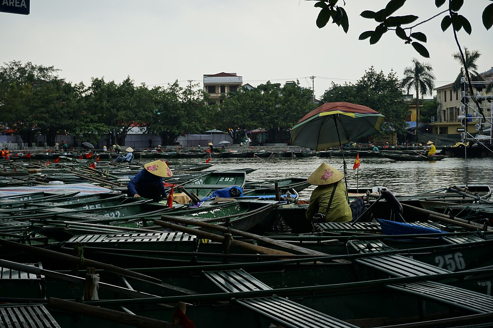

База на 2–4 неделиНинь Бинь: Там Кок и Бич Донг
20.2164, 105.9374 (пристань Там Кок) · Бич Донг 20.2176, 105.9157
Деревня Там Кок стоит среди рисовых полей, из которых растут известняковые башни. Жизнь тут дешёвая и неторопливая: утром — лодка между скалами, днём — гора Муа (500 ступеней, лучший вид в провинции), вечером — хомстей, велосипед и уличная еда в двухстах метрах.
Район Бич Донг чуть тише Там Кока, а Ван Лонг — это «Там Кок без толп»: тот же карст и лодки по заповеднику, но вместо групп — цапли и тишина. В октябре поля снова зелёные, свет мягкий — лучший месяц для жизни здесь вместе с ноябрём.
Жильёхомстеи $15–30/ночь, Airbnb от 28 дней — со скидкой
Wi-Fiстабильный, звонки — да
Дорога1,5–2 ч на байке или лимузин-басом из Ханоя
Сезоноктябрь–ноябрь — идеально
лодки Чанган (ЮНЕСКО)
гора Муа
древняя столица Хоалы
пагода Байдинь